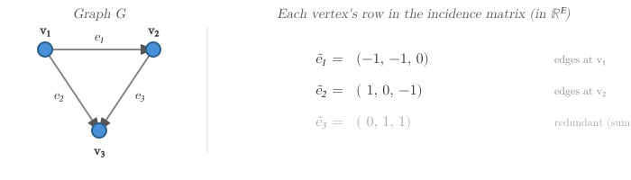
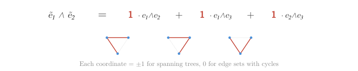

Kirchhoff’s Formula and Cauchy-Binet
TS Eliot — “We shall not cease from exploration, and the end of all our exploring will be to arrive where we started and know the place for the first time.”
One of my favorite facts: Any cofactor of the graph Laplacian counts spanning trees. This is interchangeably called Kirchhoff’s Formula, or the matrix tree theorem.
Here I walk through a proof and some nice bits of related linear algebra.
The core of Kirchhoff’s formula is the Cauchy-Binet formula: Let \(A\) be an \(n \times m\) matrix and \(B\) an \(m \times n\) matrix, with \(m \leq n\). Then \(\det(BA) = \sum_J \det(A_J)\,\det(B_J)\), where \(J\) ranges over all \(m\)-element subsets of \(\{1, \dots, n\}\), and \(A_J, B_J\) denote the corresponding \(m \times m\) minors.
I was intimidated by this when I first saw it. There’s a lot going on in it, and it looks messy.
But viewed correctly it’s actually a tautology: it’s just functoriality. It’s just Parseval. It’s just Pythagoras.
None of these ideas are original to me; in fact, Claude Opus 4.6 helped me clarify a lot of these connections. LLMs are really good at pointing out what abstractions I’m missing and need for a clearer understanding! It’s a really nice time to like learning math.
Reduction to Cauchy-Binet
The reduction of the Matrix-Tree theorem to Cauchy-Binet goes as follows:
Let \(E\) be the incidence matrix of the graph (\(n\) vertices, \(m\) edges). Delete one row to get the reduced incidence matrix \(\tilde{E}\), which is \((n-1) \times m\). Then any cofactor of the Laplacian \(L = EE^\top\) equals \(\det(\tilde{E}\tilde{E}^\top)\).
Note that \((n-1) \times (n-1)\) minors of \(\tilde{E}\) select \(n-1\) edges. Such a minor has \(\det = \pm 1\) iff those edges form a spanning tree (and 0 otherwise); a cycle is a linear dependency among the edges.
- \(\det(\tilde{E}\tilde{E}^\top) = \sum_{S} \det(\tilde{E}_S)^2\), by Cauchy-Binet, where \(S\) ranges over \(n-1\)-element subsets of edges. By the previous observation, this counts the number of spanning trees.
So, why is Cauchy-Binet true?
Proof of Cauchy-Binet via Functoriality
CB is functoriality of the wedge product and understanding that matrix minors are the Plücker coordinates:
Let \(A: M \to L\) and \(B: L \to M\) with \(\dim M = m\), \(\dim L = n\). Pick bases \(\{e_i\}\) for \(M\), \(\{f_j\}\) for \(L\).
Multi-linear algebra facts:
- \(\Lambda^m(M)\) is 1-dimensional, and has a natural basis \(e_1 \wedge \ldots \wedge e_m = e_{I}\).
- \(\Lambda^m(BA)\) acts as multiplication by \(\det(BA)\)
- \(\Lambda^{m}(A)\) maps \(e_1 \wedge \cdots \wedge e_m\) to \(\sum_J \det(A_J) \, f_J\), where the \(f_J\) form the Plücker basis of \(\Lambda^m(L)\).
- \(\Lambda^m(B)\) maps \(f_J\) to \(\det(B_J) e_{I}\).
3./4. are just the Plücker coordinate interpretations of matrix minors.
Given these, Cauchy-Binet follows immediately, by calculating where \(e_I\) is mapped by \(\Lambda^{m}(BA)\) as both the multiplication by determinant and factoring through L first and expanding with the Plücker basis.
Proof Cauchy-Binet via Inner Products
CB is Parseval’s identity:
Let \(V\) be an \(n\)-dimensional inner product vector space, and pick an orthonormal basis \(\{e_1, \dots, e_n\}\).
Define an inner product on \(\bigwedge^{m} V\) by:
\((v_1 \wedge \ldots \wedge v_m , w_1 \wedge \ldots \wedge w_m) = \det( (v_i, w_j))\)
This is well-defined on \(\bigwedge^m V\): the formula \(\det((v_i, w_j))\) is multilinear and alternating in the \(v_i\)’s (because the determinant is multilinear and alternating in its rows), and similarly in the \(w_j\)’s. Since \(\bigwedge^m V\) is the quotient of the free vector space on \(V^m\) by exactly these relations, the pairing descends to a well-defined pairing on \(\bigwedge^m V\). It’s symmetric (transposing the matrix doesn’t change the determinant, and the inner product on \(V\) is symmetric), and positive definite (\(\det((v_i, v_j))\) is the Gram determinant, which equals the squared volume — nonnegative, and zero iff the vectors are linearly dependent, i.e., the wedge is zero). So it’s an inner product.
Cauchy-Binet is then just Parseval’s identity in this inner product space. Writing the coordinates of \(v_i\) and \(w_j\) as rows of matrices \(V\) and \(W\), the definition gives \((v_1 \wedge \cdots \wedge v_m, w_1 \wedge \cdots \wedge w_m) = \det(VW^\top)\). The wedge products \(e_I = e_{i_1} \wedge \cdots \wedge e_{i_m}\) for \(m\)-element subsets \(I \subseteq \{1,\dots,n\}\) form an orthonormal basis for \(\bigwedge^m V\) (the Plücker basis). Expanding:
\[
v_1 \wedge \cdots \wedge v_m = \sum_I \det(V_I)\, e_I,
\qquad
w_1 \wedge \cdots \wedge w_m = \sum_I \det(W_I)\, e_I
\]
By Parseval (inner product = dot product of coordinates in an orthonormal basis):
\[
\boxed{\det(VW^\top) = \sum_I \det(V_I)\,\det(W_I)}
\]
Geometric interpretation
The inner product \(\det((v_i, w_j))\) has a nice geometric meaning:
Step 1: Replacing \(v_i\) by its projection \(\pi v_i\) onto \(\text{span}(w_1, \ldots, w_m)\) doesn’t change \(\det((v_i, w_j))\), because \(v_i - \pi v_i\) is perpendicular to every \(w_j\).
Step 2: Now all vectors — \(\pi v_1, \ldots, \pi v_m\) and \(w_1, \ldots, w_m\) — live in the same \(m\)-dimensional subspace. Pick an orthonormal basis for it. In that basis, the coordinates form two \(m \times m\) square matrices \(V'\) and \(W'\).
Step 3: Since they’re square: \(\det((v_i, w_j)) = \det(V'^\top W') = \det(V') \cdot \det(W')\).
So \(\det((v_i, w_j))\) = (signed \(m\)-volume of the projection of the \(v\)-parallelotope onto the \(w\)-plane) \(\times\) (\(m\)-volume of the \(w\)-parallelotope). This generalizes the dot product: for \(m = 1\), \((v, w) = |v|\cos\theta \cdot |w|\).
Cauchy-Binet is just Pythagoras
Setting \(V = W\) in Cauchy-Binet gives \(\det(VV^\top) = \sum_I \det(V_I)^2\). This is a generalized Pythagorean theorem: the squared \(m\)-volume of a parallelotope equals the sum of squared projections onto coordinate \(m\)-planes.
This special case determines the general formula by polarization. Both sides of Cauchy-Binet define bilinear forms on \(\bigwedge^m V\):
- LHS: \((\omega, \eta) \mapsto \det(VW^\top)\)
- RHS: \((\omega, \eta) \mapsto \sum_I \omega_I \eta_I\) (dot product in Plücker coordinates)
The Pythagorean theorem says they agree on the diagonal (\(\omega = \eta\)). A symmetric bilinear form is determined by its diagonal via \(B(x,y) = \frac{1}{2}(B(x+y, x+y) - B(x,x) - B(y,y))\) (“polarization”). So they agree everywhere.
Matrix-Tree theorem is just Pythagoras
Each row of the incidence matrix is a vector in \(\mathbb{R}^E\) — the edge-signature of a vertex, recording with signs which edges touch it. The rows sum to zero, so one is redundant. Delete it. The remaining \(|V|-1\) rows are vectors in edge space \(\mathbb{R}^E\).

Wedge them together:
\[ \tilde{e}_1 \wedge \cdots \wedge \tilde{e}_{|V|-1} \;\in\; \bigwedge^{|V|-1}(\mathbb{R}^E) \]
This lives in \(\bigwedge^{|V|-1}(\mathbb{R}^E)\), a space whose basis is indexed by \(|V|-1\)-element subsets of edges. The coordinate for a subset \(S\) is \(\det(\tilde{E}_S)\): it is \(\pm 1\) when \(S\) is a spanning tree and \(0\) when \(S\) contains a cycle.

Kirchhoff’s formula is then just the Pythagorean theorem in this space (as we showed in Proof Cauchy-Binet via Inner Products)
\[ \det(\tilde{E}\tilde{E}^\top) = \|\tilde{e}_1 \wedge \cdots \wedge \tilde{e}_{|V|-1}\|^2 = \sum_{S} \det(\tilde{E}_S)^2 = \#\text{spanning trees} \]
Into the depths: Cheeger-Müller and Reidemeister Torsion
… there’s always more to write and learn about… maybe another time.
Here’s a cool paper that outlines the Reidemeister torsion connection: Kirchhoff’s theorems in higher dimensions and Reidemeister torsion